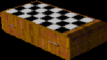

|  |
Two players can use this board to play a game of chess. Anyone else can use the board to observe. The board must be on the ground for people to be able to play each other. If you pick up a board in the middle of a match, the board will save the status of the game so that it may be concluded later. It is wise to find a safe area to play.
|
||||